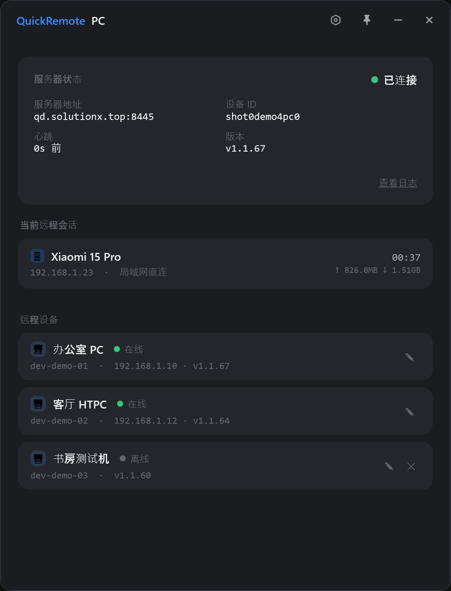
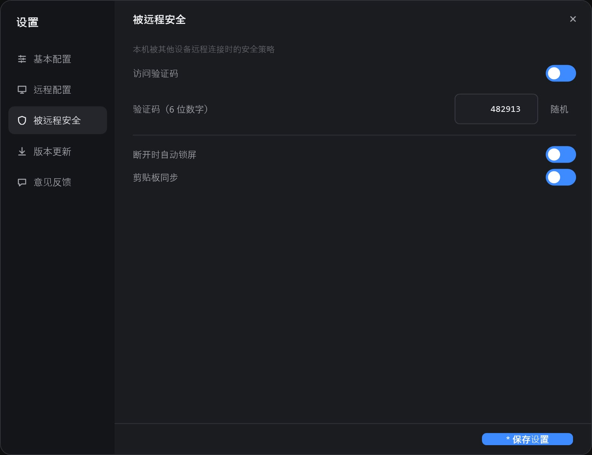
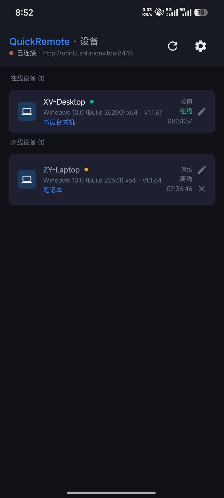
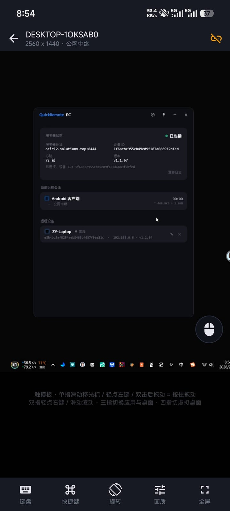

QuickRemote
把 Windows 桌面实时推到手机上的远程控制工具：同网段自动直连、跨网络走自建中转，画面经 H.264 硬件编解码，触摸与键盘实时回传。全部源码已在 GitHub 开源。
项目介绍
QuickRemote 是一套自建的远程控制方案：Windows 端安装客户端后自动向服务器注册上线，安卓 App 配置同一台服务器即可看到全部在线主机并发起连接。桌面画面在 PC 端由 DXGI 采集、Media Foundation 硬件编码成 H.264，经自研帧协议传输，安卓端用 MediaCodec 硬解后零拷贝渲染到 Surface；触摸、键盘与剪贴板事件反向回传。同网段时优先局域网直连，跨网络时自动回落到公网中继 —— 不依赖公网 IP，也不用第三方远程桌面服务。
Android 客户端
Kotlin + Jetpack Compose 原生 App，MediaCodec 硬件解码，多点触控手势、软键盘与修饰键、双向剪贴板同步。
Windows 客户端
C# / .NET 8 WPF，DXGI 桌面复制 + Media Foundation H.264 硬件编码（失败自动回落 JPEG），托盘常驻、开机自启、断开自动锁屏。
中转服务器
Go 高并发，负责设备注册、设备列表、隧道桥接与认证鉴权；纯 Go SQLite，无 CGO 依赖。
安全机制
预共享密钥 SHA-256 校验、JWT 令牌认证、隧道 session 验证，可选 6 位访问验证码与断开自动锁屏。
双通道连接
同网段局域网直连（8447）低延迟优先，未通即回落公网中继；两条链路协议一致，切换无感。
版本更新
manifest.json 统一版本清单，客户端与中继安装脚本自动感知最新版本并升级。
开源
QuickRemote 已完全开源
PC 客户端（C# / .NET 8 WPF）、Android App（Kotlin + Jetpack Compose）、Go 中继服务器与本站关于页的全部源码都放在 GitHub 上，仓库地址见下。欢迎提 Issue 反馈问题、提 Pull Request 一起改进。
产品预览




以上均为客户端真实界面截图（PC 端为离屏渲染、Android 端为真机运行画面）。
下载客户端
下载统计
系统架构
PC 上线
客户端启动 → 建立控制连接 → 预共享密钥认证 → 注册设备信息 → 每 30 秒心跳保活
设备发现
安卓 App 认证获取令牌 → 请求设备列表 → 服务器返回在线与离线主机（含最后心跳时间）
隧道协商
选择主机 → 请求隧道 → 服务器通知 PC 接入 → 两端写入角色标记与 session 校验后双向桥接
桌面推流
同网段优先局域网直连（8447）；PC 采集并编码 H.264 → 安卓硬解渲染，触摸 / 键盘 / 剪贴板反向回传
技术栈
| 组件 | 技术 | 说明 |
|---|---|---|
| Windows 客户端 | C# / .NET 8 WPF | DXGI Desktop Duplication 采集 + Media Foundation H.264 硬件编码 |
| 安卓 App | Kotlin + Jetpack Compose | MediaCodec 硬解、Surface 零拷贝渲染，Material3 设计 |
| 中转服务器 | Go + SQLite | 高性能并发与隧道桥接，纯 Go SQLite 无 CGO 依赖 |
| 局域网直连 | 自研 TCP 帧协议 | PC 直接监听 8447，同网段免走公网中转 |
| 分发更新 | manifest 清单 | 统一版本号，客户端与安装脚本自动升级 |
部署方法
Relay Server（Linux 一键部署）
在您的 Linux 服务器（Ubuntu/Debian/CentOS 等）上执行以下命令，需要 root 权限。脚本为交互式，直接回车即可采用默认值。
curl -fsSL -o install.sh https://qd.solutionx.top/d/p/2430959d-0e8d-4647-9c89-0c671141709b && sudo bash install.sh下载脚本
使用 curl 下载 install.sh 到当前目录
执行安装
自动检测系统架构（amd64/arm64）并拉取对应二进制
交互式配置
提示输入监听端口、预共享密钥、JWT 密钥，均可回车采用默认值
自动启动
创建配置、注册 systemd 服务并启动，设置开机自启
常用命令
sudo systemctl status quickremote-relaysudo systemctl restart quickremote-relaysudo journalctl -u quickremote-relay -fsudo bash /opt/quickremote/install.shPC 客户端（Windows）
下载客户端
点击下载 PC 客户端 v1.1.70（ZIP），解压到任意目录后运行 QuickRemote.PCClient.exe
配置服务器
「设置 → 基本配置」填入服务器地址与预共享密钥，保存后自动注册上线（托盘气泡提示连接状态）
可选加固
「被远程安全」可开启 6 位访问验证码与断开自动锁屏；手机接进来时可用「基本配置 → 生成二维码」，在 Android 端 App 内用「扫码导入」扫描即可，免手输配置
Android App
允许未知来源
手机开启「允许安装未知来源应用」
下载安装 APK
点击下载 Android App v1.0.83（APK）并点击安装
配置服务器
用 App 内「扫码导入」扫 PC 端「手机配对」的二维码即可自动填好（需相机权限）；也可手动填入中转服务器地址与预共享密钥，或把 PC 上的配置串用「粘贴配置导入」导入
测试并连接
点击「测试连接」确认可达后保存，回到设备列表即可看到在线主机并发起远程控制
使用说明
PC 客户端（Windows）
托盘常驻
点击窗口关闭按钮(✕)最小化到托盘而非退出；双击托盘图标恢复窗口；右键可「显示主窗口」或「退出」
状态提示
托盘图标通过气泡通知提示连接状态（已连接 / 连接中 / 重连中 / 未连接）
被远程安全
可设 6 位访问验证码（手机连接时校验）、断开自动锁屏、剪贴板同步开关；同网段是否优先直连也在设置中心配置
更新与日志
「版本更新」页检查新版本并阅读更新记录；「上传日志」将本地日志发送到中转服务器
反向远控
PC 也能作为主控端查看其他 PC：设备列表选中主机即可打开独立的远程控制窗口
Android App
设备列表（主页）
自动获取主机并分「在线设备」「离线设备」两段展示，下拉刷新；✎ 为设备写本机备注，✕ 隐藏离线设备
远程会话页
连接建立后实时显示被控桌面，顶部工具栏可切换画质与旋转，支持悬浮球鼠标与空白区触控板模式
触控与键盘
单指移动 = 鼠标移动；单击 = 左键；双指点击 = 右键；捏合 = 缩放。软键盘可直接打字，Ctrl / Shift 修饰键与「中英」键切换被控端输入法
画质与链路
流畅 / 标准 / 高清 / 原画四档，会话内即可切换、无需重连；同网段自动直连，跨网络自动走中继
其他能力
双向剪贴板同步、被控机锁屏时用远程解锁输入登录 PIN / 密码、被控端开启验证码时弹出验证框、版本更新与日志上传
安全机制
| 机制 | 说明 |
|---|---|
| 预共享密钥 | PC 与 App 接入服务器时用 SHA-256 校验共享密钥，双方必须一致 |
| JWT 令牌 | App 认证通过后签发（有效期 1 小时），设备列表与隧道请求均校验 Bearer 令牌 |
| 隧道验证 | 隧道两端各自写入角色标记与 session_id，服务器比对通过后才做双向桥接 |
| 访问验证码 | 被控 PC 可开启 6 位数字验证码，主控端验证通过才开始推流（15 秒超时、错 3 次断开） |
| 断开自动锁屏 | 会话结束后自动锁定被控 PC 桌面（默认开启，延迟 30 秒执行） |
| 剪贴板同步 | 会话期间双向同步纯文本剪贴板，可随时关闭；关闭后不读取也不写入剪贴板 |
| 传输加密 | 控制连接支持原生 TLS（服务器地址以 https:// 开头即启用）；隧道内只传屏幕帧与输入事件，不承载 Windows 登录凭据 |